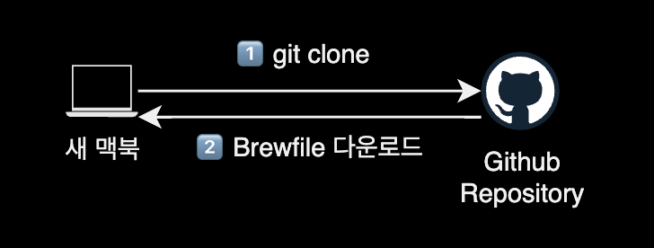
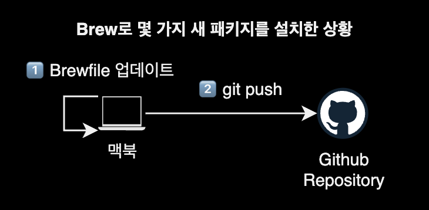

brew 백업 및 복구
개요
현재 머신의 brew에서 전체 설치된 패키지들을 백업하고, 다른 머신에 복구해서 환경 그대로 구성하는 방법을 소개합니다.
배경지식
Brewfile

Homebrew(Brew)는 macOS 운영 체제에서 패키지 관리를 위한 인기 있는 도구입니다.
Brew를 사용하면 커맨드 라인을 통해 손쉽게 다양한 소프트웨어 패키지를 설치, 업데이트 및 관리할 수 있습니다. Brew에서 ‘bundle’은 Brewfile이라는 파일에 명시된 패키지들을 일괄적으로 설치하거나 관리하는 기능을 의미합니다.
Brewfile은 일반적으로 프로젝트 또는 시스템에 필요한 패키지들의 목록을 기술한 텍스트 파일입니다. 이 파일에는 Brew를 사용하여 설치하려는 패키지의 이름, 버전 및 다른 옵션들이 포함될 수 있습니다. Brewfile은 패키지 의존성을 관리하고 프로젝트를 다른 환경으로 이전할 때 패키지 설치를 자동화하는 데 유용합니다. 따라서 Brew를 사용하는 개발자나 시스템 관리자들은 Brewfile을 작성하여 프로젝트 또는 시스템의 패키지 의존성을 쉽게 관리할 수 있습니다.
환경
- OS : macOS 12.5
- Shell : zsh
- Terminal : iTerm2
- 패키지 관리자 : brew 3.5.6
사용법
brew 백업 전 준비사항
homewbrew에서 백업은 bundle이라고 부릅니다.
bundle 기능을 사용하려면 homebrew/bundle 탭을 등록해야 합니다.
brew bundle 명령어를 실행하면 homebrew/bundle 탭이 자동으로 등록됩니다.
$ brew bundle --help
전체 탭 목록을 확인합니다.
$ brew tap
...
homebrew/bundle
homebrew/bundle 탭이 새로 추가된 걸 확인할 수 있습니다.
brew 백업
현재 설치된 모든 tap, cask, formulae를 리스트로 뽑아낸 후 현재 경로에 Brewfile을 새로 생성합니다.
# Brewfile 생성하기
$ brew bundle dump --describe
--describe 옵션은 생성한 Brewfile에 각 패키지를 설명하는 주석을 같이 달아줍니다.
생성할 Brewfile의 이름을 직접 정할 수도 있습니다.
# 지정된 이름의 Brewfile 생성하기
$ brew bundle dump --describe --file='Brewfile_20220724'
Brewfile 내용 확인
생성된 Brewfile 내용을 확인합니다.
$ brew bundle list
또는 cat 명령어로 Brewfile의 내용을 직접 확인할 수도 있습니다.
$ cat ./Brewfile
tap "acrogenesis/macchanger"
tap "aquasecurity/trivy"
tap "aws/tap"
...
brew "argo"
brew "argocd"
brew "autojump"
...
brew 복구
brew가 설치된 새 맥북에서 Brewfile을 옮긴 후 아래 명령어를 입력해서 복구를 실행합니다.
# 디폴트 파일명 Brewfile을 사용하여 설치
$ brew bundle install
# 특정 이름의 Brewfile을 사용하여 설치
$ brew bundle install --file Brewfile_20220724
Brewfile에 적혀있는 모든 tap, cask, formulae 패키지들이 한 번에 설치됩니다.
더 나아가서
dotfile로 관리하기
제 경우는 개인 맥북과 업무용 맥북에서 동일한 Brew 패키지 환경을 유지하기 위해 Brewfile을 dotfile로 관리하고 있습니다.


참고자료
Moving a Homebrew installation to another machine
Homebrew로 설치한 전체 패키지를 다른 맥북으로 옮기는 법을 설명하는 가이드